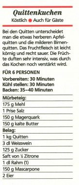
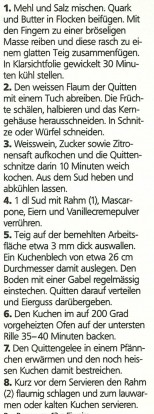
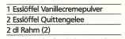

Quittenkuchen Rezept



Zutaten:
- 600g Quitten
- 2 Eier
- 150g Zucker
- 1 Päckchen Vanillezucker
- 200g gemahlene Mandeln
- 50g Mehl
- 1 TL Backpulver
- 100g Butter
- 100g Schlagsahne
- Puderzucker zum Bestäuben
Zubereitung:
- Quitten schälen, entkernen und in Stücke schneiden.
-
Eier, Zucker und Vanillezucker in einer Schüssel verrühren.
-
Gemahlene Mandeln, Mehl, Backpulver, Butter und Sahne zur
Eier-Zucker-Mischung hinzufügen und zu einem Teig verarbeiten.
- Quittenstücke in den Teig geben und gleichmäßig verteilen.
-
Den Kuchen bei 180°C im vorgeheizten Ofen ca. 1 Stunde backen.
-
Nach dem Abkühlen mit Puderzucker bestäuben und servieren.